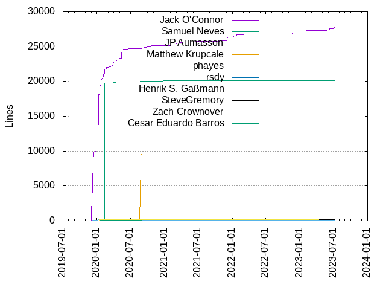
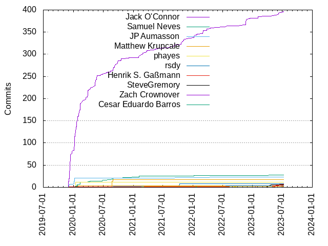

Authors
| Author | Commits (%) | + lines | - lines | First commit | Last commit | Age | Active days | # by commits |
|---|
| Jack O'Connor | 397 (71.02%) | 27704 | 10770 | 2019-12-02 | 2023-07-06 | 1311 days, 23:36:30 | 162 | 1 |
| Samuel Neves | 28 (5.01%) | 20124 | 478 | 2020-01-10 | 2023-04-21 | 1197 days, 6:27:50 | 20 | 2 |
| JP Aumasson | 23 (4.11%) | 207 | 91 | 2019-12-04 | 2022-04-17 | 864 days, 22:29:01 | 10 | 3 |
| Matthew Krupcale | 17 (3.04%) | 9746 | 1119 | 2020-08-14 | 2020-08-31 | 16 days, 17:33:55 | 8 | 4 |
| phayes | 12 (2.15%) | 210 | 83 | 2020-01-13 | 2020-01-15 | 1 day, 20:53:53 | 3 | 5 |
| rsdy | 8 (1.43%) | 88 | 33 | 2021-10-07 | 2021-10-12 | 5 days, 10:59:49 | 4 | 6 |
| Henrik S. Gaßmann | 7 (1.25%) | 239 | 103 | 2023-05-11 | 2023-06-12 | 32 days, 0:43:40 | 3 | 7 |
| SteveGremory | 6 (1.07%) | 134 | 30 | 2022-05-31 | 2022-06-13 | 12 days, 12:53:10 | 5 | 8 |
| Zach Crownover | 4 (0.72%) | 15 | 16 | 2022-03-25 | 2022-03-25 | 0:04:45 | 1 | 9 |
| Cesar Eduardo Barros | 4 (0.72%) | 55 | 7 | 2020-01-11 | 2020-02-03 | 23 days, 5:33:02 | 3 | 10 |
| sdlyyxy | 3 (0.54%) | 11 | 4 | 2023-06-24 | 2023-06-24 | 20:01:15 | 1 | 11 |
| TheVice | 3 (0.54%) | 4 | 6 | 2020-01-27 | 2020-01-27 | 4:33:38 | 1 | 12 |
| Shun Sakai | 3 (0.54%) | 453 | 323 | 2022-09-14 | 2022-10-02 | 18 days, 17:35:47 | 2 | 13 |
| Ricardo Fernández Serrata | 3 (0.54%) | 3 | 3 | 2022-07-18 | 2022-07-21 | 3 days, 15:40:15 | 2 | 14 |
| Jean-Philippe Aumasson | 3 (0.54%) | 3 | 0 | 2019-12-04 | 2023-05-01 | 1243 days, 11:09:46 | 3 | 15 |
| Elichai Turkel | 3 (0.54%) | 76 | 4 | 2023-06-06 | 2023-07-09 | 33 days, 1:28:38 | 2 | 16 |
| joveian | 2 (0.36%) | 32 | 22 | 2023-01-12 | 2023-01-21 | 8 days, 23:23:58 | 2 | 17 |
| jbis9051 | 2 (0.36%) | 15 | 1 | 2022-01-23 | 2022-01-24 | 1 day, 3:43:29 | 2 | 18 |
| Renzo Carbonara | 2 (0.36%) | 72 | 20 | 2020-08-30 | 2020-09-01 | 2 days, 0:52:43 | 2 | 19 |
| Paul Grandperrin | 2 (0.36%) | 5 | 5 | 2021-01-07 | 2021-02-25 | 48 days, 21:07:50 | 2 | 20 |
These didn't make it to the top: Justus K, Hans Henrik Bergan, Erik Johansson, Eduardo Leegwater Simões, wargio, namazso, Tino Reichardt, P.M, Nikolai Vazquez, Matthias Schiffer, Leonard Buskin, Joel Rosdahl, Javier Blazquez, Guido Vranken, Giovanni, Fangrui Song, David Burkett, Brendan Molloy, Alexx Roche, Alexandre Mutel, Alberto González Palomo, Albert Safin, 1f604
Only top 20 authors shown
Only top 20 authors shown
| Month | Author | Commits (%) | Next top 5 | Number of authors |
|---|
| 2023-07 | Jack O'Connor | 3 (60.00% of 5) | Elichai Turkel | 2 |
| 2023-06 | Jack O'Connor | 5 (41.67% of 12) | sdlyyxy, Henrik S. Gaßmann, Elichai Turkel, 1f604 | 5 |
| 2023-05 | Henrik S. Gaßmann | 5 (50.00% of 10) | Jack O'Connor, Joel Rosdahl, Jean-Philippe Aumasson | 4 |
| 2023-04 | Eduardo Leegwater Simões | 2 (66.67% of 3) | Samuel Neves | 2 |
| 2023-03 | Jack O'Connor | 1 (100.00% of 1) | | 1 |
| 2023-02 | Jack O'Connor | 4 (100.00% of 4) | | 1 |
| 2023-01 | joveian | 2 (50.00% of 4) | namazso, Alberto González Palomo | 3 |
| 2022-12 | Jack O'Connor | 2 (100.00% of 2) | | 1 |
| 2022-11 | Jack O'Connor | 14 (100.00% of 14) | | 1 |
| 2022-10 | Shun Sakai | 2 (50.00% of 4) | Jack O'Connor, Giovanni | 3 |
| 2022-09 | wargio | 1 (25.00% of 4) | Shun Sakai, Jean-Philippe Aumasson, Javier Blazquez | 4 |
| 2022-07 | Ricardo Fernández Serrata | 3 (60.00% of 5) | Jack O'Connor | 2 |
| 2022-06 | SteveGremory | 5 (62.50% of 8) | Jack O'Connor, Tino Reichardt | 3 |
| 2022-05 | SteveGremory | 1 (100.00% of 1) | | 1 |
| 2022-04 | Jack O'Connor | 3 (60.00% of 5) | JP Aumasson, Fangrui Song | 3 |
| 2022-03 | Jack O'Connor | 11 (73.33% of 15) | Zach Crownover | 2 |
| 2022-01 | Jack O'Connor | 9 (75.00% of 12) | jbis9051, Samuel Neves | 3 |
| 2021-12 | Jack O'Connor | 2 (66.67% of 3) | Matthias Schiffer | 2 |
| 2021-11 | Jack O'Connor | 5 (100.00% of 5) | | 1 |
| 2021-10 | Jack O'Connor | 9 (52.94% of 17) | rsdy | 2 |
| 2021-09 | Jack O'Connor | 3 (60.00% of 5) | JP Aumasson, David Burkett | 3 |
| 2021-08 | Jack O'Connor | 2 (100.00% of 2) | | 1 |
| 2021-07 | Jack O'Connor | 3 (100.00% of 3) | | 1 |
| 2021-05 | Jack O'Connor | 3 (100.00% of 3) | | 1 |
| 2021-04 | Jack O'Connor | 1 (100.00% of 1) | | 1 |
| 2021-03 | Jack O'Connor | 6 (85.71% of 7) | P.M | 2 |
| 2021-02 | Jack O'Connor | 11 (73.33% of 15) | Samuel Neves, Paul Grandperrin | 3 |
| 2021-01 | Samuel Neves | 1 (50.00% of 2) | Paul Grandperrin | 2 |
| 2020-12 | Jack O'Connor | 2 (66.67% of 3) | Alexandre Mutel | 2 |
| 2020-10 | Jack O'Connor | 6 (66.67% of 9) | Hans Henrik Bergan, Samuel Neves | 3 |
| 2020-09 | Jack O'Connor | 17 (94.44% of 18) | Renzo Carbonara | 2 |
| 2020-08 | Matthew Krupcale | 17 (54.84% of 31) | Jack O'Connor, Samuel Neves, Renzo Carbonara, Nikolai Vazquez, Alexx Roche | 6 |
| 2020-07 | Jack O'Connor | 4 (80.00% of 5) | Samuel Neves | 2 |
| 2020-06 | Jack O'Connor | 4 (50.00% of 8) | Samuel Neves, Justus K | 3 |
| 2020-05 | Jack O'Connor | 26 (100.00% of 26) | | 1 |
| 2020-04 | Jack O'Connor | 8 (88.89% of 9) | Samuel Neves | 2 |
| 2020-03 | Jack O'Connor | 23 (92.00% of 25) | Samuel Neves | 2 |
| 2020-02 | Jack O'Connor | 34 (82.93% of 41) | Samuel Neves, Erik Johansson, Cesar Eduardo Barros | 4 |
| 2020-01 | Jack O'Connor | 78 (64.46% of 121) | JP Aumasson, phayes, Samuel Neves, TheVice, Cesar Eduardo Barros | 11 |
| 2019-12 | Jack O'Connor | 83 (91.21% of 91) | JP Aumasson, Jean-Philippe Aumasson | 3 |
| Year | Author | Commits (%) | Next top 5 | Number of authors |
|---|
| 2023 | Jack O'Connor | 16 (41.03% of 39) | Henrik S. Gaßmann, sdlyyxy, Elichai Turkel, joveian, Eduardo Leegwater Simões | 12 |
| 2022 | Jack O'Connor | 44 (62.86% of 70) | SteveGremory, Zach Crownover, Shun Sakai, Ricardo Fernández Serrata, jbis9051 | 14 |
| 2021 | Jack O'Connor | 45 (71.43% of 63) | rsdy, Samuel Neves, Paul Grandperrin, P.M, Matthias Schiffer | 8 |
| 2020 | Jack O'Connor | 209 (70.61% of 296) | Samuel Neves, Matthew Krupcale, JP Aumasson, phayes, Cesar Eduardo Barros | 18 |
| 2019 | Jack O'Connor | 83 (91.21% of 91) | JP Aumasson, Jean-Philippe Aumasson | 3 |
| Domains | Total (%) |
|---|
| gmail.com | 415 (74.24%) |
|---|
| zoom.us | 43 (7.69%) |
|---|
| dei.uc.pt | 22 (3.94%) |
|---|
| matthewkrupcale.com | 17 (3.04%) |
|---|
| users.noreply.github.com | 13 (2.33%) |
|---|
| symmetree.dev | 8 (1.43%) |
|---|
| gassmann.onl | 7 (1.25%) |
|---|
| protonmail.com | 4 (0.72%) |
|---|
| cesarb.eti.br | 4 (0.72%) |
|---|
| protonmail.ch | 3 (0.54%) |
|---|